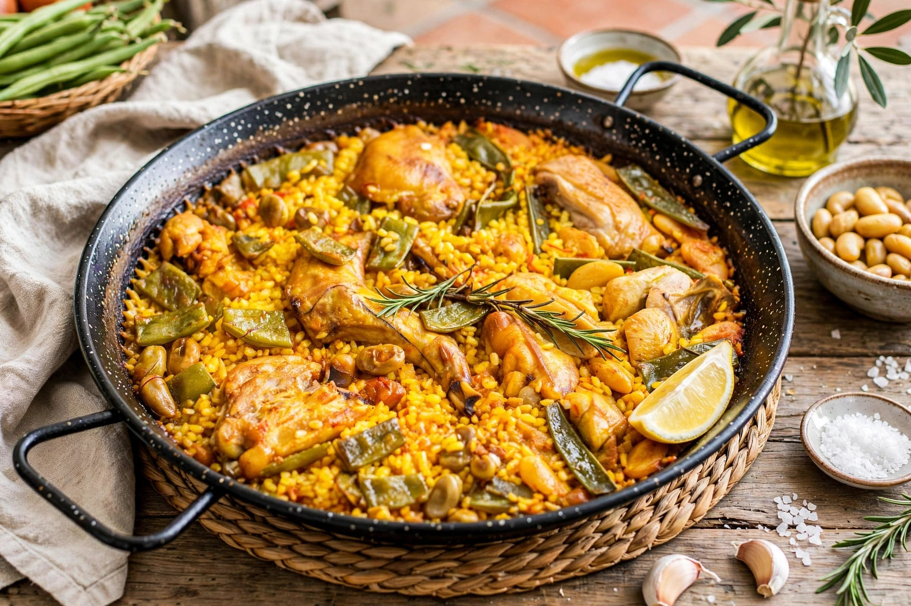
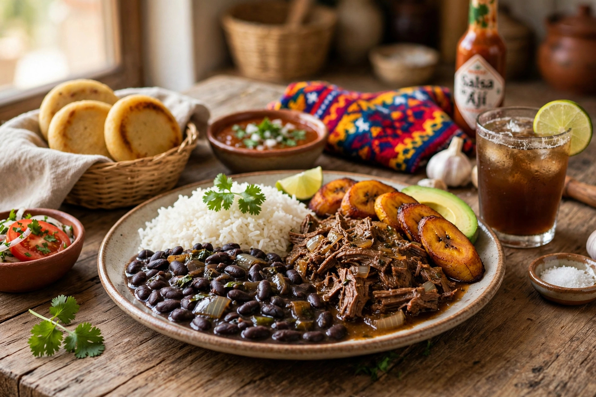
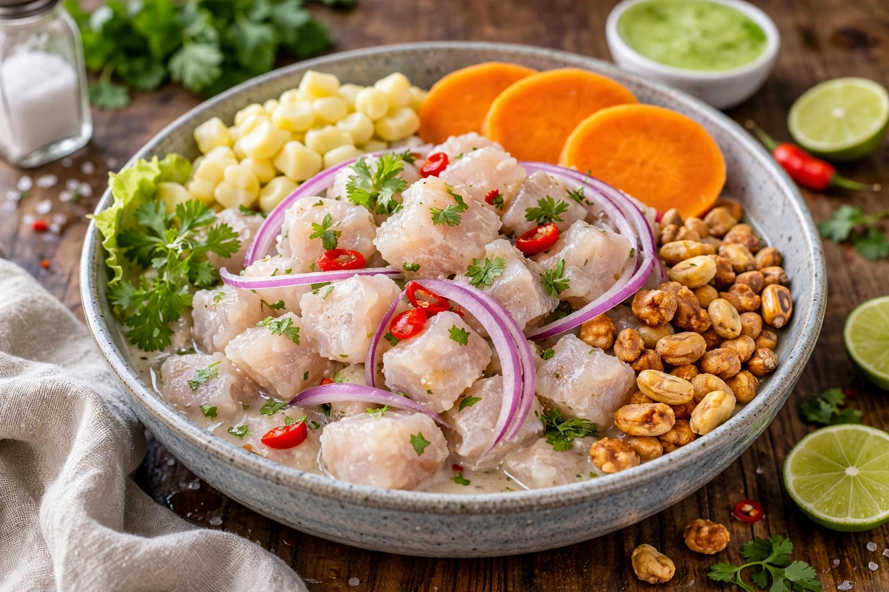
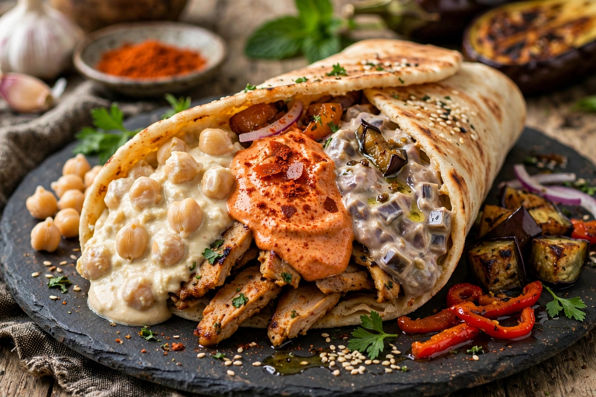

Chef Internacional
Escuela del Chef
Mérida, Venezuela
Formación con Chef Jesús Sánchez.
Chef Internacional
Chef Internacional
Cocinero con experiencia internacional en Venezuela, Perú, Chile y Colombia, actualmente en São Paulo, Brasil.
Cocinero disciplinado, rápido, limpio y con experiencia en ambientes de alta presión.
Acostumbrado a trabajar en equipo, asumir responsabilidades y empezar desde abajo para crecer dentro de una empresa.
Actualmente vivo en São Paulo, Brasil, y busco una oportunidad como Ajudante de Cozinha o Cozinheiro.
Busco empezar desde cero en Brasil y crecer dentro de la empresa, aportando mi experiencia internacional y desarrollando nuevas habilidades dentro de la gastronomía brasileña.
Puesto objetivo: Ajudante de Cozinha / Cozinheiro
Edad: 37 años
Nacionalidad: Venezolano
Origen: Mérida, Estado Mérida, Venezuela
Residencia actual: São Paulo - SP, Barra Funda
Disponibilidad: Inmediata
Documentación: Al día
Escuela del Chef
Mérida, Venezuela
Formación con Chef Jesús Sánchez.
Santiago, Chile
Preparación de platos fríos, entradas, ensaladas y ceviches fusión.
Chorrillos, Perú
Especialista en cocina marina peruana, ceviches, arroz con mariscos y lomo saltado.
Bogotá, Colombia
Liderazgo de cocina, creación de menú, control de costos y gestión de equipo.
Mérida, Venezuela
Cocina árabe-venezolana y gestión completa de cocina.
Mérida, Venezuela
Cocina marina, parrillas, pastas y cocina venezolana.




Cocinero disciplinado, rápido, limpio y con experiencia en alta presión.
Acostumbrado a trabajar en equipo y a empezar desde abajo, manteniendo una actitud profesional y orientada al aprendizaje.
Teléfono: +55 69 993761177
Email: pupayadev@gmail.com
Ubicación: Barra Funda, São Paulo - SP
Disponibilidad: Inmediata
Documentación: Al día